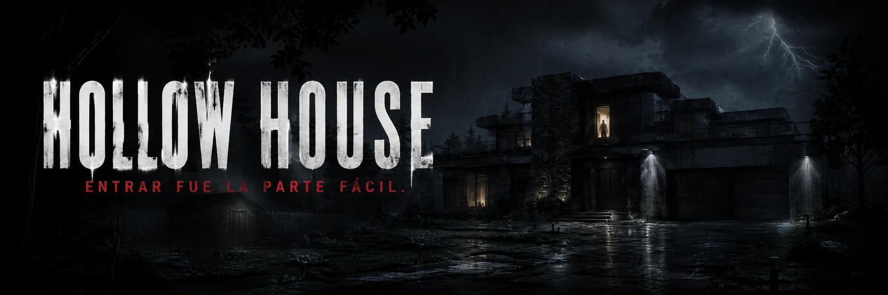
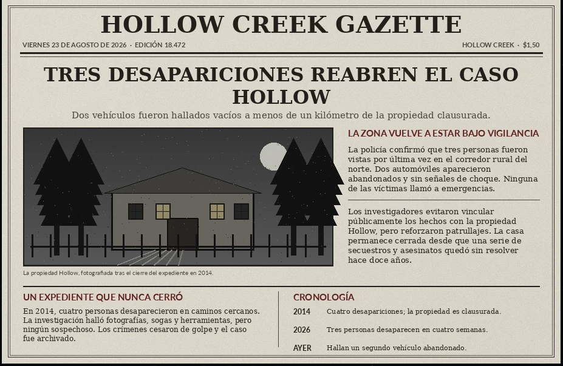
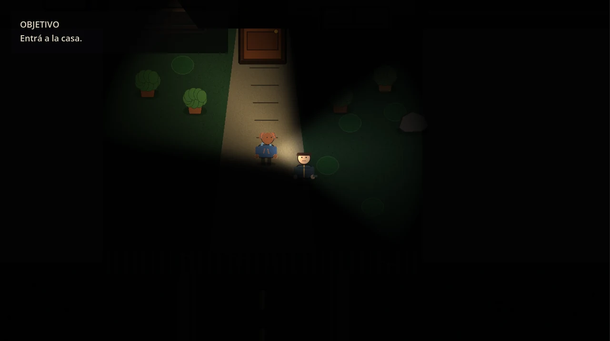
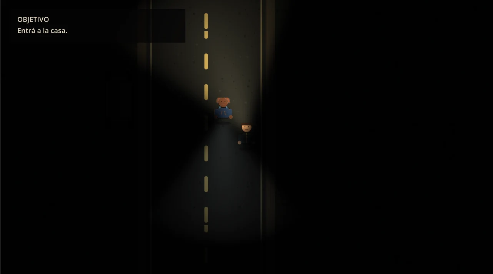
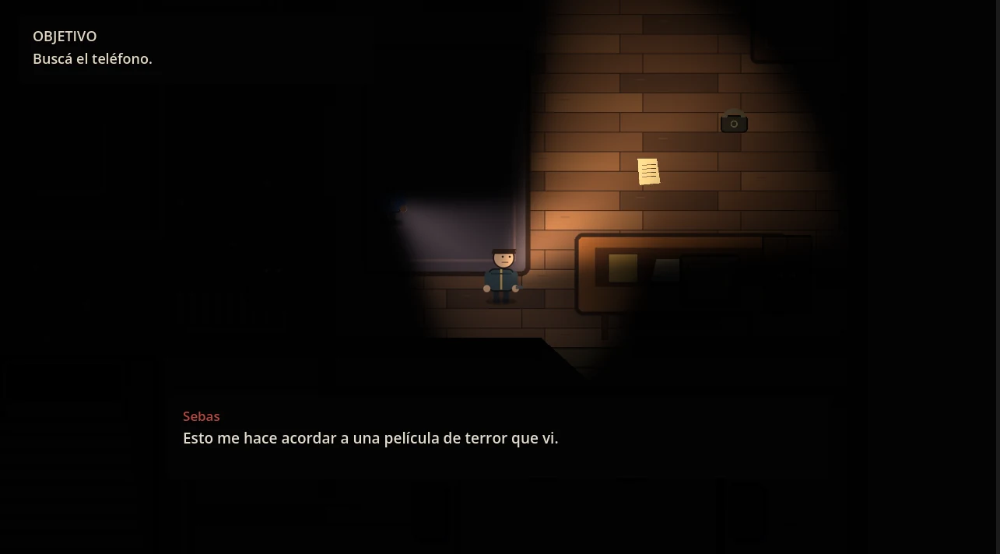

Linterna
La oscuridad limita el mapa a unos pocos metros. Cada habitación se revela de a poco.

JUEGO INDIE DE TERROR 2D · HOLLOW CREEK
Entrar fue la parte fácil.
Doce años después de que una serie de desapariciones quedara sin resolver, Alex y Sebas entran en la antigua propiedad Hollow. La tormenta corta el camino de regreso. Algo dentro de la casa ya sabe que llegaron.
EL CASO HOLLOW
En 2014, cuatro personas desaparecieron en caminos cercanos a la propiedad Hollow. No hubo sospechosos. La investigación se archivó.
Doce años después, tres nuevas desapariciones y vehículos abandonados vuelven a señalar el mismo lugar. Hollow Creek empieza a mirar otra vez hacia la casa que había decidido olvidar.

LA EXPERIENCIA
La oscuridad limita el mapa a unos pocos metros. Cada habitación se revela de a poco.
Objetos, habitaciones y pistas reconstruyen lo ocurrido en Hollow Creek.
La historia no sucede en silencio. Los personajes reaccionan, hablan y avanzan juntos hacia algo que no entienden.
Tormenta, silencios, pasos y sonidos lejanos hacen que escuchar sea tan importante como mirar.
CAPTURAS REALES



“Si escuchás algo detrás de ti, quizá ya sea demasiado tarde.”
CRONOLOGÍA
La historia de Hollow House no comienza cuando Alex cruza la puerta. Empieza mucho antes.
Cuatro desapariciones. La investigación no encuentra un responsable.
Tres personas desaparecen en pocas semanas. Aparecen vehículos abandonados.
La tormenta empeora. La salida deja de ser una certeza.
¿VAS A ENTRAR?
Jugá la versión publicada y seguí el desarrollo desde la página oficial de itch.io.
Ir a itch.io →Hollow House · Hollow Creek · 2026